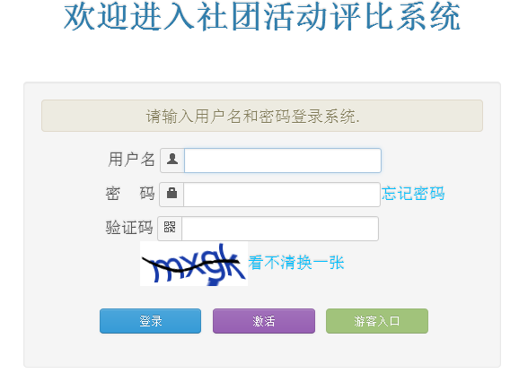
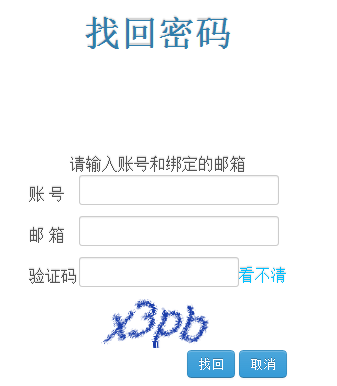
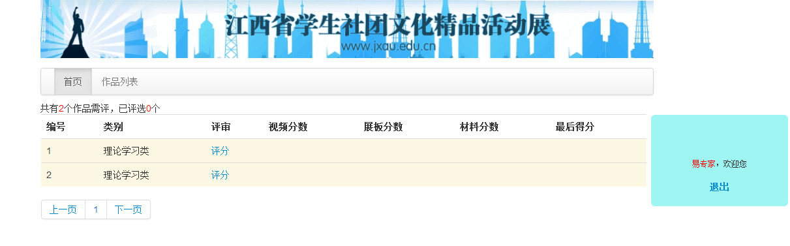
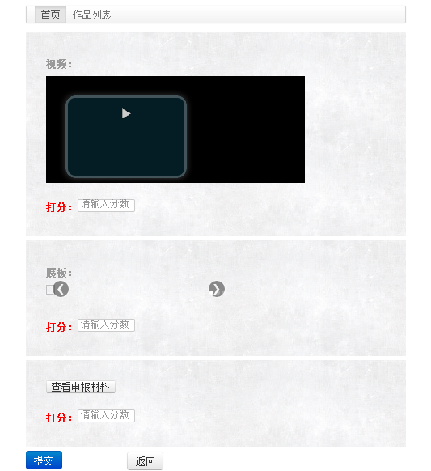
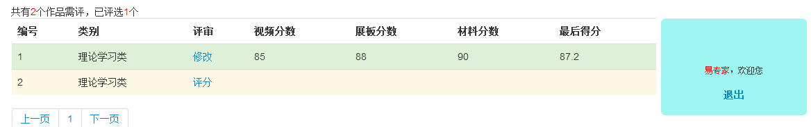
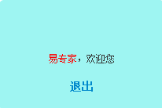
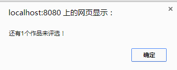
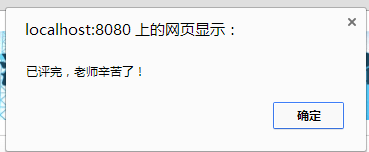

评审专家操作手册
一 专家登陆

图1
专家填写自己的账号、密码，在填写正确的验证码，点击“登陆”按钮登陆系统（如图1所示）。
若专家忘记自己的密码，点击“忘记密码”,进入找回密码页面（如图2所示）

图2
填写账号和自己的邮箱等信息，点击“找回”按钮，密码会通过邮箱的形式发送给专家
二 专家打分
专家登陆成功后进入如下的页面（如图3所示）：

图3
该页面会在左上角显示专家需评的人数和已经评选完的人数，以便专家核实。
点击“评分”,进入如下页面（如图4所示）：

图4
专家分别查看视频、展板、申报材料，并为其打分（100分制），打完分后点击“提交”，评分完成。返回图5所示页面：

图5
若专家对某个作品的打分不满意，可以点击“修改”，进行修改。
三 专家退出

图6
专家点击退出可以退出系统，若专家未评选完，会弹出如图7所示的对话框：

图7
若专家已评选完会弹出如图8所示的对话框：

图8